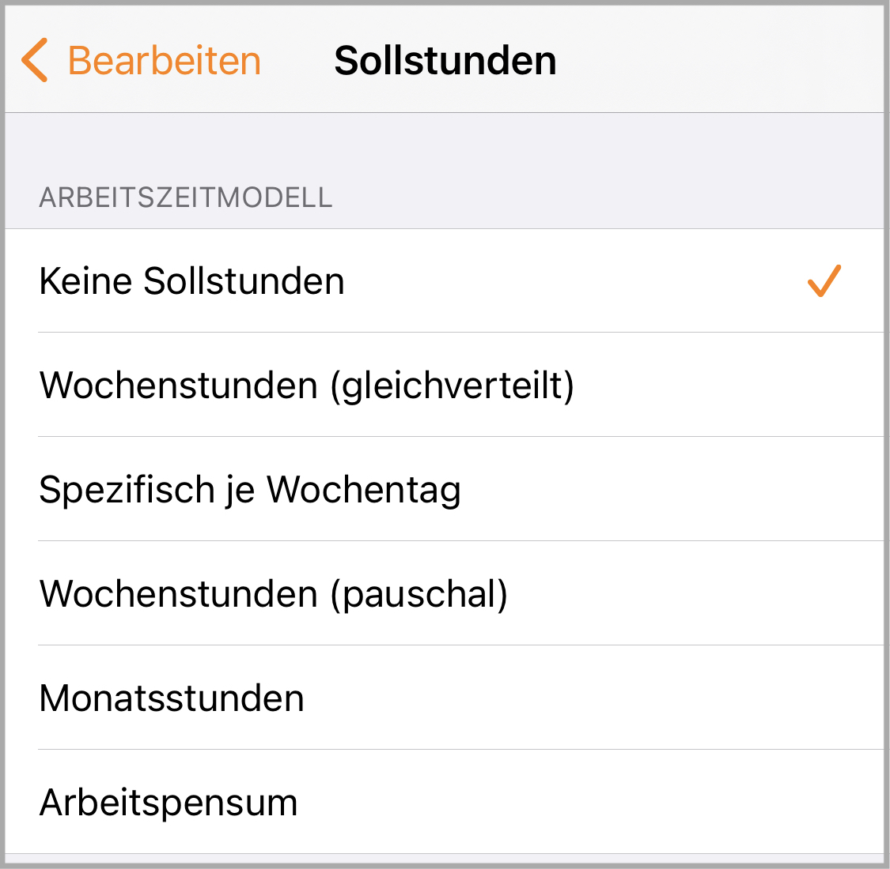

Nouveaux modèles de temps de travail
Avec la mise à jour (8.0), tu disposeras de cinq nouveaux modèles de temps de travail dans les paramètres de tes Jobs. Chacun d'entre eux possède des caractéristiques spécifiques qui t'aideront à saisir et à évaluer tes temps de manière encore plus précise.
Important : si tu utilises la synchronisation iCloud, la mise à jour doit être installée sur tous les appareils avant de procéder à des modifications ici.
Pas d'Heures prévues
Ce modèle de temps de travail s'adresse à tous les utilisateurs qui souhaitent simplement enregistrer leurs Horaires de travail et leurs Salaires, sans devoir suivre des exigences contractuelles.
Aucun calcul des heures théoriques ou supplémentaires n'est effectué.
Heures hebdomadaires (réparties de manière égale)
Ce modèle de temps de travail était à la base des versions précédentes de myWork. Il s'adresse à tous les travailleurs qui (selon leur contrat de travail) doivent respecter une durée hebdomadaire de travail fixe sur un nombre fixe de jours de travail.
Les heures théoriques et supplémentaires au jour le jour sont calculées sur la base des heures hebdomadaires prévues divisées par le nombre de jours ouvrables.
Les jours de travail supplémentaires sont directement enregistrés comme Heures supplémentaires.
Spécifique par jour de la semaine
Ce modèle de temps de travail te permet d'enregistrer un temps de travail théorique spécifique pour chaque jour de la semaine. Il est donc idéal pour les contrats (à temps partiel) avec des Heures prévues variables.
Les Heures supplémentaires du jour sont directement calculées à partir des Heures prévues du jour de la semaine.
Dans ce modèle, tu peux en outre configurer les "heures en cas d'absence" en conséquence.
Heures hebdomadaires (forfait)
Ce modèle de temps de travail est également basé sur des Heures prévues hebdomadaires. Il est idéal pour les salariés, les étudiants ou les travailleurs indépendants qui peuvent effectuer leurs Heures prévues sans jours de travail fixes.
Les Heures supplémentaires sont calculées à la fin de la semaine précédente. Un affichage au jour le jour n'est pas possible.
Heures mensuelles
Ce modèle de temps de travail est basé sur des Heures prévues mensuelles. Comme les heures hebdomadaires forfaitaires, il est destiné aux salariés, aux étudiants ou aux travailleurs indépendants qui peuvent effectuer leurs Heures prévues sans jours de travail fixes.
Les Heures supplémentaires sont calculées à la Fin du mois précédent. Un affichage au jour le jour n'est pas possible.
Charge de travail
Ce modèle sert à la planification basée sur Budgt sans dépendance temporelle. Il est donc particulièrement adapté aux projets à prix fixe et aux activités de freelance.
Les Heures supplémentaires ne sont calculées qu'à partir du moment où le total des heures planifiées est atteint.
Pour ce modèle de temps de travail, il existe en outre un nouveau modèle de rémunération : "unique".
Pour savoir comment vérifier le calcul de tes heures théoriques et supplémentaires, clique ici.